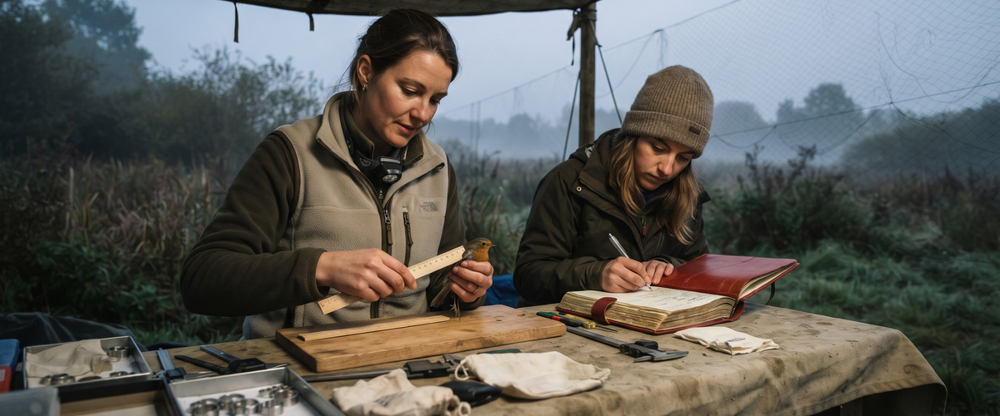

cha-missingpatchauditor
The Ringing Station. A command line auditor that compares the installed software versions declared in a baseline file against a vulnerabilities database file and reports the missing security patches. Every bird is measured and entered only when the table holds its exact figure: both sides of the comparison are documents the user supplies, and nothing is fetched and no live system is inspected.

BaselineA description plus rules: name, software, installed_version, required_version, and a severity of high, medium, or low
DatabaseA JSON list of rows, each with software, version, cve, and description
Match ruleA below required install is reported only when a database row matches its installed version as an exact string
ExitsA missing file or a schema failure exits 1; a completed comparison exits 0
Usage
python3 main.py -b BASELINE -d DATABASE [-o OUTPUT]
Both files are schema validated before anything is compared. The report prints to stdout, or to the file named by -o.
| Option | What it does |
|---|---|
-b, --baseline | Path to the baseline YAML or JSON file. Required. |
-d, --database | Path to the vulnerabilities database JSON file. Required. |
-o, --output | Path to the output file. Optional; if not specified, the report prints to stdout. |
-h | Show help message and exit. |

Stated limits
- Exact match or silence: a below required install reaches the report only when a database row matches its installed version string for string. With the database row at version 1.0.1 against an installed 1.0.0, the tool printed "No missing patches found." and exited 0, and nothing in the output says a row was skipped.
- The tool retrieves nothing and inspects no live system, whatever the repository description's retrieved from phrasing implies. The installed versions exist only as rules in the baseline file the user writes.
- The version comparison is segment wise and numeric where segments are digits, with two recorded quirks: a shorter version that is a prefix of the required one counts as older, so 1.2 flags against 1.2.0, and a text segment sorts after a bare ending, so 1.0rc1 counts as newer than 1.0.
- A rule already at its required version is not reported. A reported patch carries its CVE, its description, and the rule's severity.